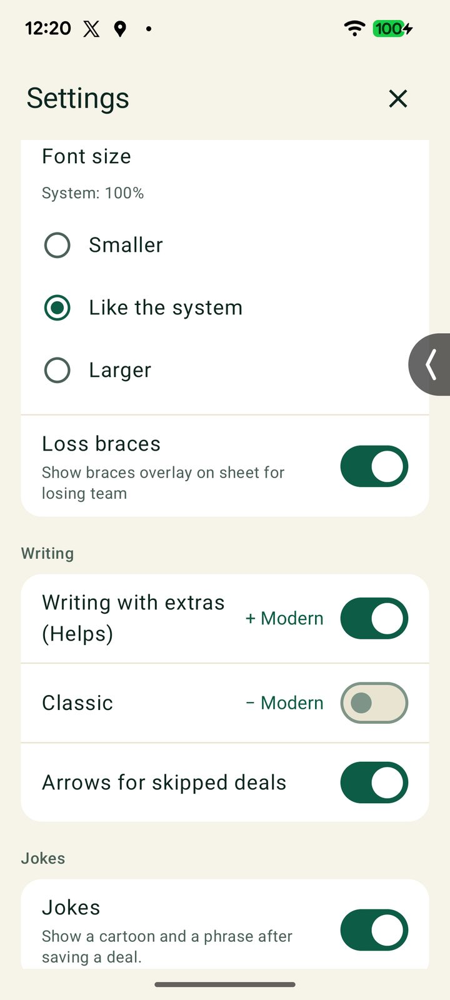
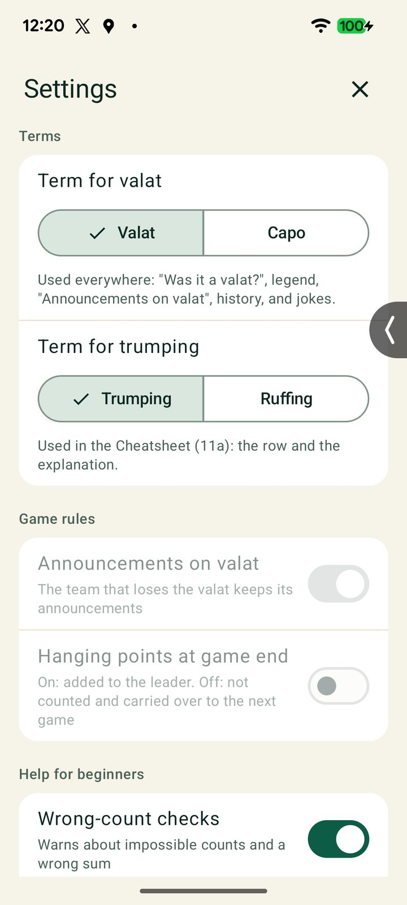
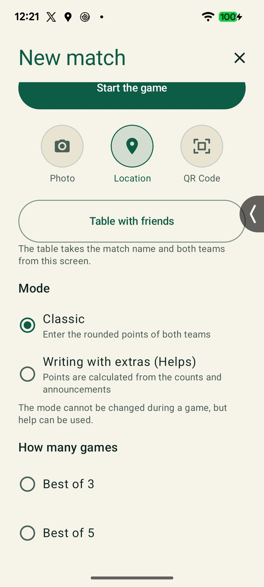
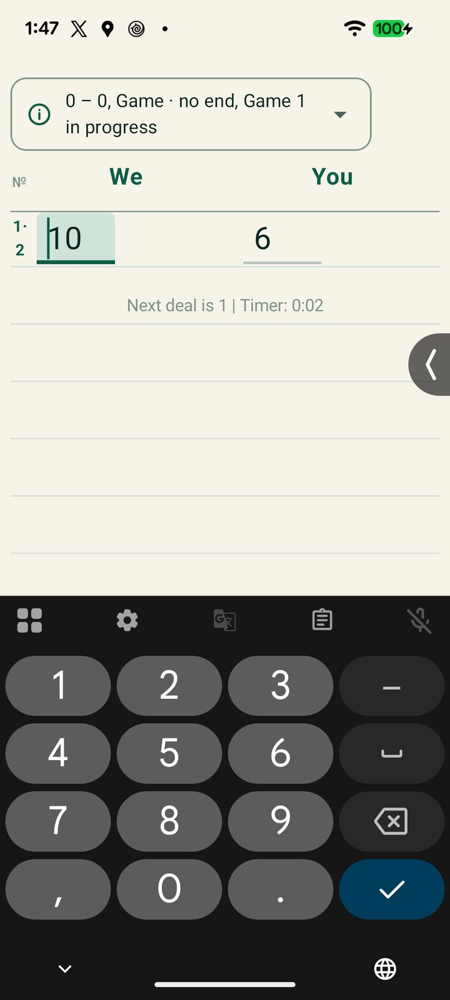
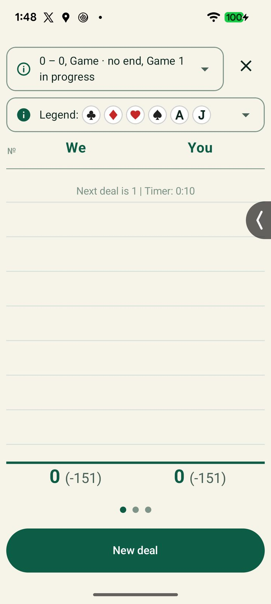
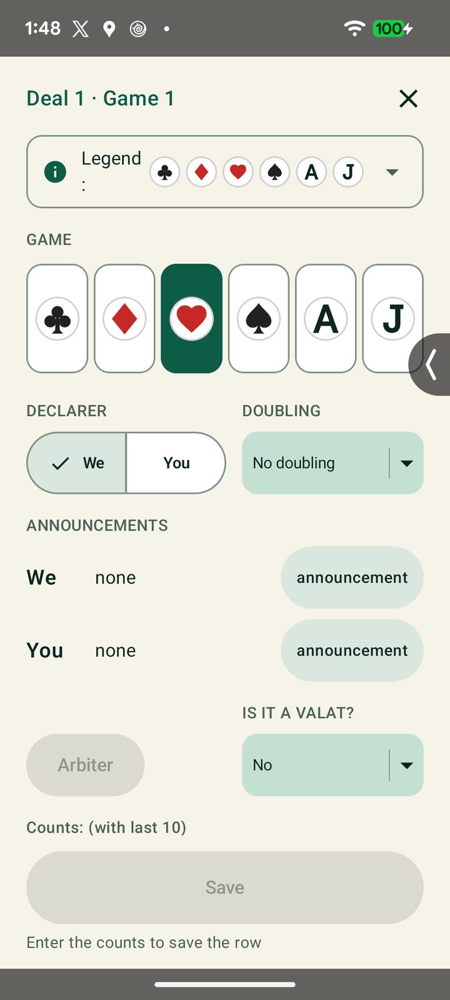
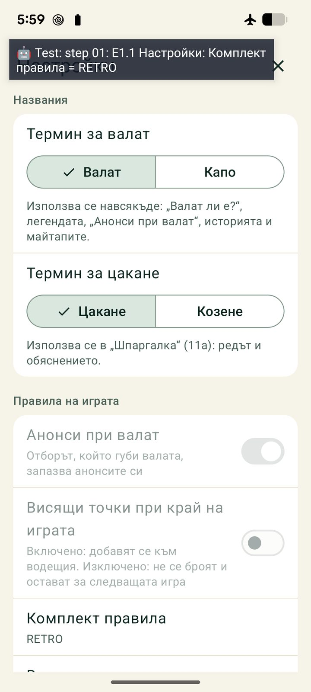

You do this by hand on the Pixel 7. Do one case at a time. For each case: do the steps, compare with "What you must see", then tick PASS or FAIL.
All expected numbers come from the owner's examples (WE-01 to WE-13, decisions 227 to 245 (226 was removed by the owner on 2026-11-23; H-102 and H-103 are PENDING P-11)), spec 5.1-5.8 and the INPH-218 matrix document. None come from the app code. Cases marked ⚠ today are expected to FAIL in today's build (INPH-572: some wrong inputs are not stopped; the exact list was not read from Jira, so every impossible input from the owner list is marked). Your ticks are kept in this browser. Cards: 7 8 9 10 J Q K A and ♣ ♦ ♥ ♠. Button names are quoted exactly as in the app (English).
10 cases that catch the most. They are copies: tick the case in its group table below (same ID). Each ID also appears below.
| ID | Function | What you do | What you must see | PASS / FAIL | Source | Check |
|---|---|---|---|---|---|---|
| H-01 | Impossible sum 2:2 ⚠ today Where: Classic sheet ("Without extras") | Open the classic sheet "Without extras". Type 2 in the "We" box. Type 2 in the "You" box. Press the check mark (Done) on the keyboard. | The app STOPS you. It shows a message. The row is NOT saved. (A deal always adds up to 16 or 26 tens, plus announcements. This does not.) | PASS if you see exactly this. FAIL if the row is saved, or if no message appears. | spec 5.8 "Sum of counts"; owner list; INPH-218 §4 | |
| H-04 | Sheet: 0:16 is a lost deal (saved) Where: Classic sheet ("Without extras") | Open the classic sheet "Without extras". Type 0 in the "We" box. Type 16 in the "You" box. Press the check mark (Done) on the keyboard. Then do it again with 0 and 26 (You took everything in a 26 game). | NO error. Both rows are saved: We 0, You 16, then We 0, You 26. (The declarer was put inside: the other team writes all the points.) | PASS if you see exactly this. FAIL if the app refuses 0:16 or 0:26. | spec 5.4 row "Declarer has less (down): 0 / all points"; WE-06 | |
| H-06 | Clubs 1:161 (impossible count 1) Where: New deal | Tap "New deal". Pick Clubs ♣. Declarer: We. Type 1 in the "We" box. Type 161 in the "You" box. Tap "Save". | The app STOPS you. It shows a message. The row is NOT saved. | PASS if you see exactly this. FAIL if the row is saved, or if no message appears. | spec 5.8 "Impossible counts" (Clubs: 1, 161) | |
| H-17 | Sum 10 too small (forgotten Last 10) Where: New deal | Tap "New deal". Pick Clubs ♣. Declarer: We. Type 76 in the "We" box. Type 76 in the "You" box. Tap "Save". | The app STOPS you. It shows a message. The row is NOT saved. The message says the "last 10" was probably forgotten (sum 152, must be 162). | PASS if you see exactly this. FAIL if the row is saved, or if no message appears. | spec 5.8 "Sum of counts" (10 less) | |
| H-19 | Belot in No trumps Where: New deal | Tap "New deal". Pick No trump. Declarer: We. Type 70 in the "We" box. Type 60 in the "You" box. Open announcements, add "Belot" for We. Tap "Save". | The app STOPS you. It shows a message. The row is NOT saved. No announcements are allowed in No trumps. | PASS if you see exactly this. FAIL if the row is saved, or if no message appears. | spec 5.8 "Belot" (No trumps: 0) and "Announcements in No trumps" | |
| H-31 | WE-01: Contra doubles cards AND announcements Where: New deal | Tap "New deal". Pick Clubs ♣. Declarer: We. Type 120 in the "We" box. Type 62 in the "You" box. Contra: "Contra". Announcements: We has "Terce" (20). Tap "Save". | Row points: We 36, You 0. Counts in the row: 120 and 62. (182 → 18, doubled → 36.) | PASS if you see exactly this. FAIL if any number is different, or if the app shows a wrong error. | WE-01 | |
| H-32 | WE-02: Valat adds +90, not doubled Where: New deal | Tap "New deal". Pick Hearts ♥. Declarer: We. Type 162 in the "We" box. Type 0 in the "You" box. Valat: tap "Yes, You" - it means You took NO hands. Tap "Save". | Row points: We 25, You 0. Counts: 252 and 0. (162 + 90 = 252 → 25.) | PASS if you see exactly this. FAIL if any number is different, or if the app shows a wrong error. | WE-02 | |
| H-37 | WE-07: Equal totals: hanging Where: New deal | Tap "New deal". Pick Clubs ♣. Declarer: We. Type 91 in the "We" box. Type 91 in the "You" box. Announcements: You has "Terce" (20). Tap "Save". | Row points: We 0, You 9. Hanging points shown: 9. Both counts 91. | PASS if you see exactly this. FAIL if any number is different, or if the app shows a wrong error. | WE-07 | |
| H-41 | WE-11: Clubs, both end in 6 Where: New deal | Tap "New deal". Pick Clubs ♣. Declarer: We. Type 86 in the "We" box. Type 76 in the "You" box. Tap "Save". | Row points: We 8, You 8 (total 16). | PASS if you see exactly this. FAIL if any number is different, or if the app shows a wrong error. | WE-11 | |
| H-43 | WE-13: Lower square is cancelled Where: New deal | Tap "New deal". Pick All trumps. Declarer: We. Type 338 in the "We" box. Type 120 in the "You" box. Announcements: We "Four jacks" (200); You "Four nines" (150). Tap "Save". | The app tells you You's square of Nines is cancelled. Row points: We 34, You 12. Counts 338 and 120. (How to type the cancelled square: see P-05.) | PASS if you see exactly this. FAIL if any number is different, or if the app shows a wrong error. | WE-13 | |
Pictures from the Pixel 7. If the app is still in Bulgarian, the words look different but the buttons are in the same places.







| ID | Function | What you do | What you must see | PASS / FAIL | Source | Check |
|---|---|---|---|---|---|---|
| H-01 | Impossible sum 2:2 ⚠ today Where: Classic sheet ("Without extras") | Open the classic sheet "Without extras". Type 2 in the "We" box. Type 2 in the "You" box. Press the check mark (Done) on the keyboard. | The app STOPS you. It shows a message. The row is NOT saved. (A deal always adds up to 16 or 26 tens, plus announcements. This does not.) | PASS if you see exactly this. FAIL if the row is saved, or if no message appears. | spec 5.8 "Sum of counts"; owner list; INPH-218 §4 | |
| H-02 | Impossible sum 1:1 ⚠ today Where: Classic sheet ("Without extras") | Open the classic sheet "Without extras". Type 1 in the "We" box. Type 1 in the "You" box. Press the check mark (Done) on the keyboard. | The app STOPS you. It shows a message. The row is NOT saved. (A deal always adds up to 16 or 26 tens, plus announcements. This does not.) | PASS if you see exactly this. FAIL if the row is saved, or if no message appears. | spec 5.8 "Sum of counts"; owner list; INPH-218 §4 | |
| H-03 | Impossible sum 1:16 ⚠ today Where: Classic sheet ("Without extras") | Open the classic sheet "Without extras". Type 1 in the "We" box. Type 16 in the "You" box. Press the check mark (Done) on the keyboard. | The app STOPS you. It shows a message. The row is NOT saved. (A deal always adds up to 16 or 26 tens, plus announcements. This does not.) | PASS if you see exactly this. FAIL if the row is saved, or if no message appears. | spec 5.8 "Sum of counts"; owner list; INPH-218 §4 | |
| H-04 | Sheet: 0:16 is a lost deal (saved) Where: Classic sheet ("Without extras") | Open the classic sheet "Without extras". Type 0 in the "We" box. Type 16 in the "You" box. Press the check mark (Done) on the keyboard. Then do it again with 0 and 26 (You took everything in a 26 game). | NO error. Both rows are saved: We 0, You 16, then We 0, You 26. (The declarer was put inside: the other team writes all the points.) | PASS if you see exactly this. FAIL if the app refuses 0:16 or 0:26. | spec 5.4 row "Declarer has less (down): 0 / all points"; WE-06 | |
| H-05 | Count 104:2 (sum too small) ⚠ today Where: New deal | Tap "New deal". Pick Clubs ♣. Declarer: We. Type 104 in the "We" box. Type 2 in the "You" box. Tap "Save". | The app STOPS you. It shows a message. The row is NOT saved. Total must be 162 for Clubs. | PASS if you see exactly this. FAIL if the row is saved, or if no message appears. | spec 5.8 "Sum of counts"; owner list | |
| H-06 | Clubs 1:161 (impossible count 1) Where: New deal | Tap "New deal". Pick Clubs ♣. Declarer: We. Type 1 in the "We" box. Type 161 in the "You" box. Tap "Save". | The app STOPS you. It shows a message. The row is NOT saved. | PASS if you see exactly this. FAIL if the row is saved, or if no message appears. | spec 5.8 "Impossible counts" (Clubs: 1, 161) | |
| H-07 | Clubs 161:1 (impossible count 161) Where: New deal | Tap "New deal". Pick Clubs ♣. Declarer: We. Type 161 in the "We" box. Type 1 in the "You" box. Tap "Save". | The app STOPS you. It shows a message. The row is NOT saved. | PASS if you see exactly this. FAIL if the row is saved, or if no message appears. | spec 5.8 "Impossible counts" | |
| H-08 | All-trumps 1:257 Where: New deal | Tap "New deal". Pick All trumps. Declarer: We. Type 1 in the "We" box. Type 257 in the "You" box. Tap "Save". | The app STOPS you. It shows a message. The row is NOT saved. Total is 258, but this count cannot happen. | PASS if you see exactly this. FAIL if the row is saved, or if no message appears. | spec 5.8 "Impossible counts" (All trumps: 1, 2, 5, 253, 256, 257) | |
| H-09 | All-trumps 2:256 Where: New deal | Tap "New deal". Pick All trumps. Declarer: We. Type 2 in the "We" box. Type 256 in the "You" box. Tap "Save". | The app STOPS you. It shows a message. The row is NOT saved. Total is 258, but this count cannot happen. | PASS if you see exactly this. FAIL if the row is saved, or if no message appears. | spec 5.8 "Impossible counts" (All trumps: 1, 2, 5, 253, 256, 257) | |
| H-10 | All-trumps 5:253 Where: New deal | Tap "New deal". Pick All trumps. Declarer: We. Type 5 in the "We" box. Type 253 in the "You" box. Tap "Save". | The app STOPS you. It shows a message. The row is NOT saved. Total is 258, but this count cannot happen. | PASS if you see exactly this. FAIL if the row is saved, or if no message appears. | spec 5.8 "Impossible counts" (All trumps: 1, 2, 5, 253, 256, 257) | |
| H-11 | All-trumps 253:5 Where: New deal | Tap "New deal". Pick All trumps. Declarer: We. Type 253 in the "We" box. Type 5 in the "You" box. Tap "Save". | The app STOPS you. It shows a message. The row is NOT saved. Total is 258, but this count cannot happen. | PASS if you see exactly this. FAIL if the row is saved, or if no message appears. | spec 5.8 "Impossible counts" (All trumps: 1, 2, 5, 253, 256, 257) | |
| H-12 | All-trumps 256:2 Where: New deal | Tap "New deal". Pick All trumps. Declarer: We. Type 256 in the "We" box. Type 2 in the "You" box. Tap "Save". | The app STOPS you. It shows a message. The row is NOT saved. Total is 258, but this count cannot happen. | PASS if you see exactly this. FAIL if the row is saved, or if no message appears. | spec 5.8 "Impossible counts" (All trumps: 1, 2, 5, 253, 256, 257) | |
| H-13 | All-trumps 257:1 Where: New deal | Tap "New deal". Pick All trumps. Declarer: We. Type 257 in the "We" box. Type 1 in the "You" box. Tap "Save". | The app STOPS you. It shows a message. The row is NOT saved. Total is 258, but this count cannot happen. | PASS if you see exactly this. FAIL if the row is saved, or if no message appears. | spec 5.8 "Impossible counts" (All trumps: 1, 2, 5, 253, 256, 257) | |
| H-14 | No trumps 1:129 Where: New deal | Tap "New deal". Pick No trump. Declarer: We. Type 1 in the "We" box. Type 129 in the "You" box. Tap "Save". | The app STOPS you. It shows a message. The row is NOT saved. Total is 130, but this count cannot happen. | PASS if you see exactly this. FAIL if the row is saved, or if no message appears. | spec 5.8 "Impossible counts" (No trumps: 1, 129) | |
| H-15 | No trumps 129:1 Where: New deal | Tap "New deal". Pick No trump. Declarer: We. Type 129 in the "We" box. Type 1 in the "You" box. Tap "Save". | The app STOPS you. It shows a message. The row is NOT saved. Total is 130, but this count cannot happen. | PASS if you see exactly this. FAIL if the row is saved, or if no message appears. | spec 5.8 "Impossible counts" (No trumps: 1, 129) | |
| H-16 | "One team only" mode: We 1 Where: New deal | Tap "New deal". Pick Clubs ♣. Switch to the mode where you type only ONE team (the other box fills itself). Type 1 in the "We" box. Tap "Save". | The app STOPS you. It shows a message. The row is NOT saved. The other box fills with 161, which is impossible. | PASS if you see exactly this. FAIL if the row is saved, or if no message appears. | spec 5.7 "Counts for one team"; spec 5.8 | |
| H-17 | Sum 10 too small (forgotten Last 10) Where: New deal | Tap "New deal". Pick Clubs ♣. Declarer: We. Type 76 in the "We" box. Type 76 in the "You" box. Tap "Save". | The app STOPS you. It shows a message. The row is NOT saved. The message says the "last 10" was probably forgotten (sum 152, must be 162). | PASS if you see exactly this. FAIL if the row is saved, or if no message appears. | spec 5.8 "Sum of counts" (10 less) | |
| H-18 | Sum 10 too big (Last 10 given twice) Where: New deal | Tap "New deal". Pick Clubs ♣. Declarer: We. Type 86 in the "We" box. Type 86 in the "You" box. Tap "Save". | The app STOPS you. It shows a message. The row is NOT saved. The message says the "last 10" was probably added to both teams (sum 172). | PASS if you see exactly this. FAIL if the row is saved, or if no message appears. | spec 5.8 "Sum of counts" (10 more) | |
| H-19 | Belot in No trumps Where: New deal | Tap "New deal". Pick No trump. Declarer: We. Type 70 in the "We" box. Type 60 in the "You" box. Open announcements, add "Belot" for We. Tap "Save". | The app STOPS you. It shows a message. The row is NOT saved. No announcements are allowed in No trumps. | PASS if you see exactly this. FAIL if the row is saved, or if no message appears. | spec 5.8 "Belot" (No trumps: 0) and "Announcements in No trumps" | |
| H-20 | Belot twice in Clubs Where: New deal | Tap "New deal". Pick Clubs ♣. Declarer: We. Type 92 in the "We" box. Type 90 in the "You" box. Add "Belot" for We AND "Belot" for You. Tap "Save". | The app STOPS you. It shows a message. The row is NOT saved. In a suit game only 1 belot is possible. | PASS if you see exactly this. FAIL if the row is saved, or if no message appears. | spec 5.8 "Belot" (suit: at most 1) | |
| H-21 | Square of Jacks twice Where: New deal | Tap "New deal". Pick Clubs ♣. Declarer: We. Type 162 in the "We" box. Type 100 in the "You" box. Add "Four jacks" for We AND for You. Tap "Save". | The app STOPS you. It shows a message. The row is NOT saved. Each square can happen only once per deal. | PASS if you see exactly this. FAIL if the row is saved, or if no message appears. | spec 5.8 "Square"; INPH-218 §4 (20:20 impossible) | |
| H-22 | Empty box Where: New deal | Tap "New deal". Pick Clubs ♣. Leave the "We" box EMPTY. Type 162 in the "You" box. Tap "Save". | The app STOPS you. It shows a message. The row is NOT saved. (An empty box must not count as a number.) | PASS if you see exactly this. FAIL if the row is saved, or if no message appears. | spec 5.8 "Out of range" / "Result only: whole numbers ≥ 0" | |
| H-23 | Negative number Where: New deal | Tap "New deal". Pick Clubs ♣. Declarer: We. Type -5 in the "We" box. Type 167 in the "You" box. Tap "Save". | The app STOPS you. It shows a message. The row is NOT saved. | PASS if you see exactly this. FAIL if the row is saved, or if no message appears. | spec 5.8 "Out of range" (counts < 0) | |
| H-24 | Letters instead of numbers Where: New deal | Tap "New deal". Pick Clubs ♣. Try to type the letters abc in the "We" box. | The box does not accept letters (stays empty), or shows an error. The app does not crash. | PASS if you see exactly this. FAIL if the app crashes or saves letters. | spec 5.8 "Result only: whole numbers ≥ 0" | |
| H-25 | Count above the maximum Where: New deal | Tap "New deal". Pick Clubs ♣. Declarer: We. Type 163 in the "We" box. Type 0 in the "You" box. Tap "Save". | The app STOPS you. It shows a message. The row is NOT saved. 163 is more than the total 162. | PASS if you see exactly this. FAIL if the row is saved, or if no message appears. | spec 5.8 "Out of range" (> allowed sum) | |
| H-26 | Sheet: empty box Where: Classic sheet ("Without extras") | Open the classic sheet "Without extras". Leave "We" EMPTY. Type 16 in "You". Press the check mark (Done) on the keyboard. | The app STOPS you. It shows a message. The row is NOT saved. | PASS if you see exactly this. FAIL if the row is saved, or if no message appears. | spec 5.8 "Result only mode" | |
| H-27 | Sheet: negative number Where: Classic sheet ("Without extras") | Open the classic sheet "Without extras". Type -3 in the "We" box. Type 19 in the "You" box. Press the check mark (Done) on the keyboard. | The app STOPS you. It shows a message. The row is NOT saved. | PASS if you see exactly this. FAIL if the row is saved, or if no message appears. | spec 5.8 "Result only mode" (whole numbers ≥ 0) | |
| H-28 | Sheet: number above the maximum ⚠ today Where: Classic sheet ("Without extras") | Open the classic sheet "Without extras". Type 999 in the "We" box. Type 0 in the "You" box. Press the check mark (Done) on the keyboard. | The app STOPS you. It shows a message. The row is NOT saved. 999 tens (9990 counts) is more than any deal can give. Most possible: All trumps 258 + announcements 630 = 888 counts = 89 tens; Recontra x 4 = 356; valat 9 x 4 = 36; total about 392 tens. | PASS if you see exactly this. FAIL if the row is saved, or if no message appears. | spec 5.4 (Recontra x 4, premiums and valat multiplied) + spec 5.8 "Out of range" | |
| H-29 | Sheet: 0:0 needs confirmation Where: Classic sheet ("Without extras") | Open the classic sheet "Without extras". Type 0 in the "We" box. Type 0 in the "You" box. Press the check mark (Done) on the keyboard. | The app ASKS you to confirm (a warning, not an error). If you tap cancel, nothing is saved. | PASS if you see exactly this. FAIL if 0:0 is saved without asking. | spec 5.8 "Result only mode" (0-0 needs confirmation) | |
| H-30 | Valid control: 70:92 is accepted Where: New deal | Tap "New deal". Pick Diamonds ♦. Declarer: We. Type 70 in the "We" box. Type 92 in the "You" box. Tap "Save". | No error. Row is saved. We 0, You 16. | PASS if you see exactly this. FAIL if the app refuses this correct deal. | WE-06 | |
| ID | Function | What you do | What you must see | PASS / FAIL | Source | Check |
|---|---|---|---|---|---|---|
| H-31 | WE-01: Contra doubles cards AND announcements Where: New deal | Tap "New deal". Pick Clubs ♣. Declarer: We. Type 120 in the "We" box. Type 62 in the "You" box. Contra: "Contra". Announcements: We has "Terce" (20). Tap "Save". | Row points: We 36, You 0. Counts in the row: 120 and 62. (182 → 18, doubled → 36.) | PASS if you see exactly this. FAIL if any number is different, or if the app shows a wrong error. | WE-01 | |
| H-32 | WE-02: Valat adds +90, not doubled Where: New deal | Tap "New deal". Pick Hearts ♥. Declarer: We. Type 162 in the "We" box. Type 0 in the "You" box. Valat: tap "Yes, You" - it means You took NO hands. Tap "Save". | Row points: We 25, You 0. Counts: 252 and 0. (162 + 90 = 252 → 25.) | PASS if you see exactly this. FAIL if any number is different, or if the app shows a wrong error. | WE-02 | |
| H-33 | WE-03: Valat with Contra doubles the 90 too Where: New deal | Tap "New deal". Pick Spades ♠. Declarer: You. Type 0 in the "We" box. Type 162 in the "You" box. Contra: "Contra". Valat: tap "Yes, We". Tap "Save". | Row points: We 0, You 50. Counts: 0 and 252. (252 → 25, doubled → 50.) | PASS if you see exactly this. FAIL if any number is different, or if the app shows a wrong error. | WE-03 | |
| H-34 | WE-04: No trumps: counts are doubled Where: New deal | Tap "New deal". Pick No trump. Declarer: We. Type 70 in the "We" box. Type 60 in the "You" box. Tap "Save". | Row points: We 14, You 12. Counts: 140 and 120. | PASS if you see exactly this. FAIL if any number is different, or if the app shows a wrong error. | WE-04 | |
| H-35 | WE-05: All trumps: round from 5 up Where: New deal | Tap "New deal". Pick All trumps. Declarer: We. Type 138 in the "We" box. Type 120 in the "You" box. Tap "Save". | Row points: We 14, You 12. (13.8 → 14, 12.0 → 12.) | PASS if you see exactly this. FAIL if any number is different, or if the app shows a wrong error. | WE-05 | |
| H-36 | WE-06: Lost deal ("down") Where: New deal | Tap "New deal". Pick Diamonds ♦. Declarer: We. Type 70 in the "We" box. Type 92 in the "You" box. Tap "Save". | Row points: We 0, You 16. Counts 70 and 92. You gets all 162. | PASS if you see exactly this. FAIL if any number is different, or if the app shows a wrong error. | WE-06 | |
| H-37 | WE-07: Equal totals: hanging Where: New deal | Tap "New deal". Pick Clubs ♣. Declarer: We. Type 91 in the "We" box. Type 91 in the "You" box. Announcements: You has "Terce" (20). Tap "Save". | Row points: We 0, You 9. Hanging points shown: 9. Both counts 91. | PASS if you see exactly this. FAIL if any number is different, or if the app shows a wrong error. | WE-07 | |
| H-38 | WE-08: Winner takes the hanging points (do right after WE-07) Where: New deal | Tap "New deal". Pick Clubs ♣. Declarer: We. Type 92 in the "We" box. Type 70 in the "You" box. (Same game as WE-07, no new game.) Tap "Save". | Row points: We 18, You 7. (9 from the deal + 9 hanging.) Hanging points go back to 0. | PASS if you see exactly this. FAIL if any number is different, or if the app shows a wrong error. | WE-08 | |
| H-39 | WE-09: Valat, setting "Announcements on valat" ON: loser keeps announcements Where: New deal | Tap "New deal". Pick Clubs ♣. Declarer: We. Type 162 in the "We" box. Type 50 in the "You" box. Settings "Announcements on valat" must be ON. Valat: tap "Yes, You". Announcements: You has "Fifty" (50). Tap "Save". | Row points: We 25, You 5. Counts 252 and 50. | PASS if you see exactly this. FAIL if any number is different, or if the app shows a wrong error. | WE-09 | |
| H-40 | WE-10: Valat, setting "Announcements on valat" OFF: winner takes them Where: New deal | Tap "New deal". Pick Clubs ♣. Declarer: We. Type 162 in the "We" box. Type 0 in the "You" box. First turn Settings "Announcements on valat" OFF. Valat: tap "Yes, You". Announcement: You has "Fifty" (50). Tap "Save". | Row points: We 30, You 0. Counts 302 and 0. | PASS if you see exactly this. FAIL if any number is different, or if the app shows a wrong error. | WE-10 | |
| H-41 | WE-11: Clubs, both end in 6 Where: New deal | Tap "New deal". Pick Clubs ♣. Declarer: We. Type 86 in the "We" box. Type 76 in the "You" box. Tap "Save". | Row points: We 8, You 8 (total 16). | PASS if you see exactly this. FAIL if any number is different, or if the app shows a wrong error. | WE-11 | |
| H-42 | WE-12: Belot 20 Where: New deal | Tap "New deal". Pick Clubs ♣. Declarer: We. Type 112 in the "We" box. Type 70 in the "You" box. Announcements: We has "Belot". Tap "Save". | Row points: We 11, You 7. Counts 112 and 70. | PASS if you see exactly this. FAIL if any number is different, or if the app shows a wrong error. | WE-12 | |
| H-43 | WE-13: Lower square is cancelled Where: New deal | Tap "New deal". Pick All trumps. Declarer: We. Type 338 in the "We" box. Type 120 in the "You" box. Announcements: We "Four jacks" (200); You "Four nines" (150). Tap "Save". | The app tells you You's square of Nines is cancelled. Row points: We 34, You 12. Counts 338 and 120. (How to type the cancelled square: see P-05.) | PASS if you see exactly this. FAIL if any number is different, or if the app shows a wrong error. | WE-13 | |
| ID | Function | What you do | What you must see | PASS / FAIL | Source | Check |
|---|---|---|---|---|---|---|
| H-44 | Clubs: 56 vs 106 Where: New deal | Tap "New deal". Pick Clubs ♣. Declarer: You. Type 56 in the "We" box. Type 106 in the "You" box. Tap "Save". | Row points: We 6, You 10. | PASS if you see exactly this. FAIL if any number is different, or if the app shows a wrong error. | spec 5.5 example 56–106 | |
| H-45 | Clubs: 6 vs 156 Where: New deal | Tap "New deal". Pick Clubs ♣. Declarer: You. Type 6 in the "We" box. Type 156 in the "You" box. Tap "Save". | Row points: We 1, You 15. | PASS if you see exactly this. FAIL if any number is different, or if the app shows a wrong error. | spec 5.5 example 6–156 (decision 28) | |
| H-46 | All trumps: 104 vs 154 Where: New deal | Tap "New deal". Pick All trumps. Declarer: You. Type 104 in the "We" box. Type 154 in the "You" box. Tap "Save". | Row points: We 11, You 15. | PASS if you see exactly this. FAIL if any number is different, or if the app shows a wrong error. | spec 5.5 example 104–154 | |
| H-47 | All trumps: 34 vs 224 Where: New deal | Tap "New deal". Pick All trumps. Declarer: You. Type 34 in the "We" box. Type 224 in the "You" box. Tap "Save". | Row points: We 4, You 22. | PASS if you see exactly this. FAIL if any number is different, or if the app shows a wrong error. | spec 5.5 example 34–224 | |
| H-48 | All trumps: 103 vs 155 (no exception) Where: New deal | Tap "New deal". Pick All trumps. Declarer: You. Type 103 in the "We" box. Type 155 in the "You" box. Tap "Save". | Row points: We 10, You 16. | PASS if you see exactly this. FAIL if any number is different, or if the app shows a wrong error. | spec 5.5 example 103–155 | |
| H-49 | No trumps: 67 vs 63 Where: New deal | Tap "New deal". Pick No trump. Declarer: We. Type 67 in the "We" box. Type 63 in the "You" box. Tap "Save". | Row points: We 13, You 13. | PASS if you see exactly this. FAIL if any number is different, or if the app shows a wrong error. | spec 5.5 example 67–63 | |
| H-50 | Clubs hanging 106/106 Where: New deal | Tap "New deal". Pick Clubs ♣. Declarer: We. Type 106 in the "We" box. Type 106 in the "You" box. Announcements: We has "Fifty" (50). Tap "Save". | Row points: We 0, You 11. Hanging points: 10. (212 → 21; You 11; 21 − 11 = 10.) | PASS if you see exactly this. FAIL if any number is different, or if the app shows a wrong error. | spec 5.5 hanging example 106/106 (decision 76) | |
| H-51 | All trumps hanging 154/154 Where: New deal | Tap "New deal". Pick All trumps. Declarer: We. Type 154 in the "We" box. Type 154 in the "You" box. Announcements: We has "Fifty" (50). Tap "Save". | Row points: We 0, You 15. Hanging points: 16. (It must NOT be 21 / 25.) | PASS if you see exactly this. FAIL if any number is different, or if the app shows a wrong error. | spec 5.5 hanging example 154/154 (decision 76) | |
| H-52 | Winner of the next deal takes the 10 (do right after the 106/106 row) Where: New deal | Tap "New deal". Pick Clubs ♣. Declarer: We. Type 86 in the "We" box. Type 76 in the "You" box. (Same game.) Tap "Save". | Row points: We 18, You 8. Hanging back to 0. | PASS if you see exactly this. FAIL if any number is different, or if the app shows a wrong error. | spec 5.4 example 86/76 + hanging (there 8 hanging = 16; here 10 hanging = 18) | |
| ID | Function | What you do | What you must see | PASS / FAIL | Source | Check |
|---|---|---|---|---|---|---|
| H-53 | Contra, declarer wins Where: New deal | Tap "New deal". Pick Clubs ♣. Declarer: We. Type 100 in the "We" box. Type 62 in the "You" box. Contra: "Contra". Tap "Save". | Row points: We 32, You 0. (16 × 2.) | PASS if you see exactly this. FAIL if any number is different, or if the app shows a wrong error. | spec 5.4 "Order of calculation" | |
| H-54 | Recontra, declarer wins (Clubs) Where: New deal | Tap "New deal". Pick Clubs ♣. Declarer: We. Type 100 in the "We" box. Type 62 in the "You" box. Contra: "Re contra". Tap "Save". | Row points: We 64, You 0. (16 × 4.) | PASS if you see exactly this. FAIL if any number is different, or if the app shows a wrong error. | spec 5.4 (recontra Clubs = 16 × 4 = 64) | |
| H-55 | Recontra, All trumps Where: New deal | Tap "New deal". Pick All trumps. Declarer: We. Type 138 in the "We" box. Type 120 in the "You" box. Contra: "Re contra". Tap "Save". | Row points: We 104, You 0. (26 × 4.) | PASS if you see exactly this. FAIL if any number is different, or if the app shows a wrong error. | spec 5.4 (All trumps 26 × 4 = 104) | |
| H-56 | Contra, declarer loses Where: New deal | Tap "New deal". Pick Clubs ♣. Declarer: We. Type 62 in the "We" box. Type 100 in the "You" box. Contra: "Contra". Tap "Save". | Row points: We 0, You 32. (The team with more points wins, even if it did not declare.) | PASS if you see exactly this. FAIL if any number is different, or if the app shows a wrong error. | spec 5.4 "Winner is the team with more points" | |
| H-57 | Contra with equal totals Where: New deal | Tap "New deal". Pick Clubs ♣. Declarer: We. Type 91 in the "We" box. Type 91 in the "You" box. Contra: "Contra". Announcements: You has "Terce" (20). Tap "Save". | Row points: We 0, You 0. Hanging points: 36. (182 → 18, doubled → 36.) | PASS if you see exactly this. FAIL if any number is different, or if the app shows a wrong error. | spec 5.4 "Contra at equal totals" (whole doubled sum hangs) | |
| H-58 | Recontra with equal totals Where: New deal | Tap "New deal". Pick Clubs ♣. Declarer: We. Type 91 in the "We" box. Type 91 in the "You" box. Contra: "Re contra". Announcements: You has "Terce" (20). Tap "Save". | Row points: 0 and 0. Hanging points: 72. (18 × 4.) | PASS if you see exactly this. FAIL if any number is different, or if the app shows a wrong error. | spec 5.4 (recontra at equal totals) | |
| H-59 | Take the 36 hanging points (right after the Contra-equal row) Where: New deal | Tap "New deal". Pick Clubs ♣. Declarer: We. Type 92 in the "We" box. Type 70 in the "You" box. (Same game.) Tap "Save". | Row points: We 45, You 7. (9 + 36.) Hanging back to 0. | PASS if you see exactly this. FAIL if any number is different, or if the app shows a wrong error. | spec 5.4 "hanging goes to the winner of the next deal" | |
| H-60 | Two hangs in a row add up Where: New deal | Do WE-07 twice (same game, two rows). After row 2 the hanging points show 18. Then: Tap "New deal". Pick Clubs ♣. Declarer: We. Type 92 in the "We" box. Type 70 in the "You" box. Tap "Save". | After the third row: We 27, You 7. (9 + 18.) Hanging back to 0. | PASS if you see exactly this. FAIL if any number is different, or if the app shows a wrong error. | spec 5.4 "if the next deal also hangs, hanging points add up" | |
| H-61 | Lost deal with hanging points Where: New deal | Do WE-07 once (hanging 9). Then: Tap "New deal". Pick Clubs ♣. Declarer: We. Type 70 in the "We" box. Type 92 in the "You" box. Tap "Save". | Row points: We 0, You 25. (16 + 9: the team that was NOT put inside takes the hanging points.) | PASS if you see exactly this. FAIL if any number is different, or if the app shows a wrong error. | spec 5.4 (hanging goes to the team that is not "down") | |
| ID | Function | What you do | What you must see | PASS / FAIL | Source | Check |
|---|---|---|---|---|---|---|
| H-62 | Valat, No trumps Where: New deal | Tap "New deal". Pick No trump. Declarer: We. Type 130 in the "We" box. Type 0 in the "You" box. Valat: tap "Yes, You". Tap "Save". | Row points: We 35, You 0. (130 doubled = 260, plus 90 not doubled = 350.) | PASS if you see exactly this. FAIL if any number is different, or if the app shows a wrong error. | spec 5.3 "In No trumps the 90 is not doubled" | |
| H-63 | Valat, All trumps Where: New deal | Tap "New deal". Pick All trumps. Declarer: We. Type 258 in the "We" box. Type 0 in the "You" box. Valat: tap "Yes, You". Tap "Save". | Row points: We 35, You 0. (258 + 90 = 348 → 35.) | PASS if you see exactly this. FAIL if any number is different, or if the app shows a wrong error. | spec 5.1 + 5.3 | |
| H-64 | Valat with wrong counts Where: New deal | Tap "New deal". Pick Clubs ♣. Declarer: We. Type 100 in the "We" box. Type 62 in the "You" box. Valat: tap "Yes, You". Tap "Save". | The app STOPS you. It shows a message. The row is NOT saved. With a valat, one team must have all the cards and the other only its announcements. | PASS if you see exactly this. FAIL if the row is saved, or if no message appears. | spec 5.8 "Valat" | |
| H-65 | Possible valat hint Where: New deal | Tap "New deal". Pick Clubs ♣. Declarer: We. Type 162 in the "We" box. Type 0 in the "You" box. Do NOT mark a valat. Tap "Save". | A WARNING asks: "Is it a valat?". You can confirm or go back. | PASS if you see exactly this. FAIL if it saves 16:0 without asking. | spec 5.8 "Possible valat" | |
| H-66 | Capo option (+90) Where: New deal | Tap "New deal". Pick Clubs ♣. Declarer: We. Type 162 in the "We" box. Type 0 in the "You" box. Settings: the Capot switch "Capot (cards × 2, no +90) instead of Capo (+90)" OFF. Valat: "Yes, You". Tap "Save". | Row points: We 25, You 0. | PASS if you see exactly this. FAIL if any number is different, or if the app shows a wrong error. | WE-02; decision 232 | |
| H-67 | Capot option (× 2 instead of +90) Where: New deal | Tap "New deal". Pick Clubs ♣. Declarer: We. Type 162 in the "We" box. Type 0 in the "You" box. Settings: the Capot switch "Capot (cards × 2, no +90) instead of Capo (+90)" ON. Valat: "Yes, You". Tap "Save". | Row points: We 32, You 0. (162 × 2 = 324 → 32.) | PASS if you see exactly this. FAIL if any number is different, or if the app shows a wrong error. | decision 234 | |
| H-68 | Capot cancels Contra Where: New deal | Tap "New deal". Pick Clubs ♣. Declarer: We. Type 162 in the "We" box. Type 0 in the "You" box. Settings: the Capot switch "Capot (cards × 2, no +90) instead of Capo (+90)" ON. Contra: "Contra". Valat: "Yes, You". Tap "Save". | Row points: We 32, You 0. (Contra is ignored, NOT 64.) | PASS if you see exactly this. FAIL if any number is different, or if the app shows a wrong error. | decision 235 | |
| H-69 | Capot cancels Recontra Where: New deal | Tap "New deal". Pick Clubs ♣. Declarer: We. Type 162 in the "We" box. Type 0 in the "You" box. Settings: the Capot switch "Capot (cards × 2, no +90) instead of Capo (+90)" ON. Contra: "Re contra". Valat: "Yes, You". Tap "Save". | Row points: We 32, You 0. | PASS if you see exactly this. FAIL if any number is different, or if the app shows a wrong error. | decision 235 | |
| H-70 | Capot with Terce 20 (PENDING P-03) Where: New deal | Tap "New deal". Pick Clubs ♣. Declarer: We. Type 182 in the "We" box. Type 0 in the "You" box. Settings: the Capot switch "Capot (cards × 2, no +90) instead of Capo (+90)" ON. Announcements: We has "Terce" (20). Valat: "Yes, You". Tap "Save". | Row points: We 36 if announcements ARE doubled ((162+20)×2=364), or We 34 if NOT doubled (162×2+20=344). Write which one you saw. The owner decides (P-03). | PASS if you see exactly this. FAIL if it is neither 34 nor 36. | decision 233 (unclear) - PENDING P-03 | |
| ID | Function | What you do | What you must see | PASS / FAIL | Source | Check |
|---|---|---|---|---|---|---|
| H-71 | Kirtik is OFF by default Where: New deal | Tap "New deal". Pick Diamonds ♦. Declarer: We. Type 70 in the "We" box. Type 92 in the "You" box. Make sure "Kirtik (−10 in the score, Ruse variant)" is OFF. Tap "Save". | Row points: We 0, You 16. No minus points anywhere. | PASS if you see exactly this. FAIL if any number is different, or if the app shows a wrong error. | EPIC INPH-247 table (Kirtik: not by default); WE-06 | |
| H-72 | Kirtik: declarer goes inside (suit) Where: New deal | In Settings turn "Kirtik (−10 in the score, Ruse variant)" ON. Tap "New deal". Pick Diamonds ♦. Declarer: We. Type 70 in the "We" box. Type 92 in the "You" box. Tap "Save". | Row points: We −10, You 16. | PASS if you see exactly this. FAIL if any number is different, or if the app shows a wrong error. | decision 238; WE-06 | |
| H-73 | Kirtik: No trumps doubles it Where: New deal | In Settings turn "Kirtik (−10 in the score, Ruse variant)" ON. Tap "New deal". Pick No trump. Declarer: We. Type 50 in the "We" box. Type 80 in the "You" box. Tap "Save". | We −20. You 26. | PASS if you see exactly this. FAIL if any number is different, or if the app shows a wrong error. | decision 239 | |
| H-74 | Kirtik: No trumps + Contra Where: New deal | In Settings turn "Kirtik (−10 in the score, Ruse variant)" ON. Tap "New deal". Pick No trump. Declarer: We. Type 50 in the "We" box. Type 80 in the "You" box. Contra: "Contra". Tap "Save". | We −40. You 52. | PASS if you see exactly this. FAIL if any number is different, or if the app shows a wrong error. | decision 239 (You: spec 5.4) | |
| H-75 | Kirtik: No trumps + Contra + Recontra Where: New deal | In Settings turn "Kirtik (−10 in the score, Ruse variant)" ON. Tap "New deal". Pick No trump. Declarer: We. Type 50 in the "We" box. Type 80 in the "You" box. Contra: "Re contra". Tap "Save". | We −80. You 104. | PASS if you see exactly this. FAIL if any number is different, or if the app shows a wrong error. | decision 239 | |
| H-76 | Kirtik: Valat in a suit game Where: New deal | In Settings turn "Kirtik (−10 in the score, Ruse variant)" ON. Tap "New deal". Pick Clubs ♣. Declarer: We. Type 0 in the "We" box. Type 162 in the "You" box. Valat: tap "Yes, We". We declared and took no hand. Tap "Save". | We −20 (two Kirtiks, not 1+2). You 25. | PASS if you see exactly this. FAIL if any number is different, or if the app shows a wrong error. | decision 238, decision 239; WE-02 mirrored | |
| H-77 | Kirtik: Valat in No trumps Where: New deal | In Settings turn "Kirtik (−10 in the score, Ruse variant)" ON. Tap "New deal". Pick No trump. Declarer: We. Type 0 in the "We" box. Type 130 in the "You" box. Valat: tap "Yes, We". Tap "Save". | We −40. | PASS if you see exactly this. FAIL if any number is different, or if the app shows a wrong error. | decision 239 | |
| H-78 | Kirtik: Valat + No trumps + Contra Where: New deal | In Settings turn "Kirtik (−10 in the score, Ruse variant)" ON. Tap "New deal". Pick No trump. Declarer: We. Type 0 in the "We" box. Type 130 in the "You" box. Valat: "Yes, We". Contra: "Contra". Tap "Save". | We −80. (You's points: PENDING P-08.) | PASS if you see exactly this. FAIL if any number is different, or if the app shows a wrong error. | decision 239 (You: P-08) | |
| H-79 | Kirtik: Valat + No trumps + Recontra Where: New deal | In Settings turn "Kirtik (−10 in the score, Ruse variant)" ON. Tap "New deal". Pick No trump. Declarer: We. Type 0 in the "We" box. Type 130 in the "You" box. Valat: "Yes, We". Contra: "Re contra". Tap "Save". | We −160. (You's points: PENDING P-08.) | PASS if you see exactly this. FAIL if any number is different, or if the app shows a wrong error. | decision 239 (You: P-08) | |
| H-80 | Kirtik: hanging deal gives no Kirtik Where: New deal | In Settings turn "Kirtik (−10 in the score, Ruse variant)" ON. Tap "New deal". Pick Clubs ♣. Declarer: We. Type 91 in the "We" box. Type 91 in the "You" box. Announcements: You has "Terce" (20). Tap "Save". | Row points: We 0, You 9, hanging 9. NO minus points. | PASS if you see exactly this. FAIL if any number is different, or if the app shows a wrong error. | WE-07; decision 240 | |
| H-81 | Kirtik: Capot cancels Contra for Kirtik too Where: New deal | In Settings turn "Kirtik (−10 in the score, Ruse variant)" ON. Tap "New deal". Pick No trump. Declarer: We. Type 0 in the "We" box. Type 130 in the "You" box. Settings the Capot switch "Capot (cards × 2, no +90) instead of Capo (+90)" ON. Contra: "Contra". Valat: "Yes, We". Tap "Save". | We −40 (NOT −80). | PASS if you see exactly this. FAIL if any number is different, or if the app shows a wrong error. | decision 245 | |
| H-82 | Kirtik: limit −60 ends the game Where: New deal | Get the table to We 160 – You −55 (see P-10: ask for a way). Then: Tap "New deal". Pick No trump. Declarer: We. Type 0 in the "We" box. Type 130 in the "You" box. Valat: "Yes, We". Tap "Save". | You goes to −95. The game ENDS now. We wins. The valat rule does NOT keep it going. | PASS if you see exactly this. FAIL if any number is different, or if the app shows a wrong error. | decision 238, decision 243 | |
| H-83 | Kirtik limit and carry-over cannot be both ON Where: Settings | Open Settings → "Rule set". Turn "Carry the remainder into the new game" ON. Try to turn the Kirtik limit −60 ON. | The app does not allow both. It blocks the second switch or turns the first one off, and says why. | PASS if you see exactly this. FAIL if any number is different, or if the app shows a wrong error. | decision 244 | |
| ID | Function | What you do | What you must see | PASS / FAIL | Source | Check |
|---|---|---|---|---|---|---|
| H-84 | Goal is a required number Where: Settings | Open Settings → "Rule set". Look at the goal for the game (default 151). | Goal shows 151. There is NO "off" choice. You cannot leave it empty. | PASS if you see exactly this. FAIL if you can switch the goal off or leave it empty. | decision 227 | |
| H-85 | Goal maximum 999 Where: Settings | In the goal box type 999, then try 1000. | 999 is accepted. 1000 is refused. | PASS if you see exactly this. FAIL if any number is different, or if the app shows a wrong error. | EPIC INPH-247 table (goal ≤ 999) | |
| H-86 | Game does not end at 150 Where: Classic sheet ("Without extras") | Recipe R-F. Do only the 10 rows 15:11. | Table shows We 150 – You 110. The game goes on. | PASS if you see exactly this. FAIL if the game ends. | spec 5.6 rule 1 (151 or more) | |
| H-87 | Game ends at 156–120 Where: Classic sheet ("Without extras") | Recipe R-F. Do the 10 rows 15:11. Then type 6 and 10 and press the check mark (Done) on the keyboard. | Table shows We 156 – You 120. The game ENDS. We wins. | PASS if you see exactly this. FAIL if any number is different, or if the app shows a wrong error. | decision 227; spec 5.6 rule 1 | |
| H-88 | Both over 151: more points wins Where: Classic sheet ("Without extras") | Recipe R-A (139 – 139). Then type 14 and 12 and press the check mark (Done) on the keyboard. | We 153 – You 151. The game ENDS. We wins. | PASS if you see exactly this. FAIL if any number is different, or if the app shows a wrong error. | spec 5.6 rule 2 | |
| H-89 | Tie over 151: game goes on Where: Classic sheet ("Without extras") | Recipe R-A (139 – 139). Then type 13 and 13 and press the check mark (Done) on the keyboard. | We 152 – You 152. The game does NOT end. | PASS if you see exactly this. FAIL if any number is different, or if the app shows a wrong error. | spec 5.6 rule 3 | |
| H-90 | Tie, then one team leads Where: Classic sheet ("Without extras") | Right after the tie row, type 14 and 12 and press the check mark (Done) on the keyboard. | We 166 – You 164. The game ENDS. We wins. | PASS if you see exactly this. FAIL if any number is different, or if the app shows a wrong error. | spec 5.6 rule 3 | |
| H-91 | "With Capo you do not leave": 165–80 Where: New deal | Recipe R-B (We 140 – You 80). Then: Tap "New deal". Pick Hearts ♥. Declarer: We. Type 162 in the "We" box. Type 0 in the "You" box. Valat: "Yes, You". Tap "Save". | We 165 – You 80. The game does NOT end. | PASS if you see exactly this. FAIL if any number is different, or if the app shows a wrong error. | spec 5.6 rule 4 (example 140 + 25 = 165 – 80); decision 29 | |
| H-92 | ... and it ends after a deal without valat Where: New deal | Right after the row above: Tap "New deal". Pick Clubs ♣. Declarer: We. Type 86 in the "We" box. Type 76 in the "You" box. Tap "Save". | We 173 – You 88. The game ENDS. We wins. | PASS if you see exactly this. FAIL if any number is different, or if the app shows a wrong error. | spec 5.6 rule 4 | |
| H-93 | 151–159 after valat: 155–80 Where: New deal | Recipe R-C (We 130 – You 80). Then: Tap "New deal". Pick Hearts ♥. Declarer: We. Type 162 in the "We" box. Type 0 in the "You" box. Valat: "Yes, You". Tap "Save". | We 155 – You 80. The game does NOT end (155 is inside 151–159). | PASS if you see exactly this. FAIL if any number is different, or if the app shows a wrong error. | spec 5.6 rule 4; decision 3 | |
| H-94 | Carry-over ON: 168–120 → next game 17 – (−31) Where: New deal | Settings: "Carry the remainder into the new game" ON, goal 151. Recipe R-E (We 136 – You 120). Then: Tap "New deal". Pick Clubs ♣. Declarer: We. Type 100 in the "We" box. Type 62 in the "You" box. Contra: "Contra". Tap "Save". | Last row: We 32. Table We 168 – You 120. Game ENDS. Start a next game: it starts at We 17 – You −31. | PASS if you see exactly this. FAIL if any number is different, or if the app shows a wrong error. | decision 228, decision 229 | |
| H-95 | Carry-over OFF: next game 0 – 0 Where: New deal | Same as above, but "Carry the remainder into the new game" OFF. | The next game starts at 0 – 0. | PASS if you see exactly this. FAIL if any number is different, or if the app shows a wrong error. | decision 228 (default 0–0) | |
| H-96 | Hanging points at game end (default) Where: New deal | Settings: hanging at game end = OFF (default). Play any deals to We 120 – You 142 (any way you like). Then: Tap "New deal". Pick Clubs ♣. Declarer: We. Type 91 in the "We" box. Type 91 in the "You" box. Announcements: You has "Terce" (20). Tap "Save". | You 151 (142 + 9). Game ENDS, You wins. The 9 hanging points are NOT added; they wait for the next game. | PASS if you see exactly this. FAIL if any number is different, or if the app shows a wrong error. | spec 5.6 rule 5 (default) | |
| H-97 | Hanging points at game end, setting ON (PENDING P-09) Where: New deal | Same as above, but hanging-at-game-end ON. | The 9 hanging points are added to the leader (You 160). Game ENDS. Nothing is carried over. If the score were tied, they are added to nobody. | PASS if you see exactly this. FAIL if any number is different, or if the app shows a wrong error. | spec 5.6 rule 5 (true) - PENDING P-09 | |
| ID | Function | What you do | What you must see | PASS / FAIL | Source | Check |
|---|---|---|---|---|---|---|
| H-98 | Retro: square + belot together Where: New deal | Rule set "Retro". Tap "New deal". Pick All trumps. Declarer: We. Type 358 in the "We" box. Type 120 in the "You" box. Announcements: We has "Four jacks" (200) AND "Belot" (20). Tap "Save". | Allowed. Row points: We 36, You 12. (358 → 36.) | PASS if you see exactly this. FAIL if any number is different, or if the app shows a wrong error. | EPIC INPH-247 table (square + belot: yes in Retro) | |
| H-99 | Classic: square + belot together (PENDING P-01) Where: New deal | Rule set "Classic" (Classic). Same as the Retro row above. | Write what you see (saved or refused). The owner has not given an example. | PASS if you see exactly this. No FAIL here: write the result for the owner. | PENDING P-01 | |
| H-100 | Square of 7s and 8s = 100 (option) ⚠ today Where: New deal | Turn the option "square of 7 and 8 = 100" ON. Tap "New deal". Pick Spades ♠. Declarer: We. Type 192 in the "We" box. Type 70 in the "You" box. Announcement: We has square of 7s. Tap "Save". | Row points: We 19, You 7. (92 + 100 = 192 → 19.) Known NOT built yet: expect FAIL today. | PASS if you see exactly this. FAIL if any number is different, or if the app shows a wrong error. | decision 236, decision 237 (D34) | |
| H-101 | Square of 7s: Classic = 0 Where: New deal | Rule set "Classic". Same input 192 and 70. | Refused (sum is not 162). | PASS if you see exactly this. FAIL if any number is different, or if the app shows a wrong error. | decision 236, decision 237 | |
| H-102 | Rules freeze for a game (PENDING P-11) Where: New deal | Start a game with "Retro". Open Settings → "Rule set" and pick "Classic". Go back to the same game. Do WE-01. | Write what you see: does the running game keep Retro (We 36, You 0) or change to Classic? The owner removed decision 226 on 2026-11-23 and has not given a rule. | No FAIL here: write the result for the owner. | PENDING P-11 | |
| H-103 | Settings: change = new party (PENDING P-11) Where: Settings | In a running game open Settings → "Rule set" and pick another set. | Write what you see: does the app say the new rules apply only to a NEW party/game, or does it change the running one? The owner removed decision 226 on 2026-11-23 and has not given a rule. | No FAIL here: write the result for the owner. | PENDING P-11 | |
| H-104 | New game uses the new rules (PENDING P-02) Where: New deal | After the row above, start a NEW party/game. Do WE-01. | Write the row points you see. The owner has not given the Classic Contra-with-announcements answer. | PASS if you see exactly this. No FAIL here: write the result for the owner. | PENDING P-02 | |
| ID | Function | What you do | What you must see | PASS / FAIL | Source | Check |
|---|---|---|---|---|---|---|
| H-105 | Check ON: sheet 2:2 ⚠ today Where: Classic sheet ("Without extras") | Settings: "Wrong-count checks" ON. Open the classic sheet "Without extras". Type 2 in the "We" box. Type 2 in the "You" box. Press the check mark (Done) on the keyboard. | The app STOPS you. It shows a message. The row is NOT saved. | PASS if you see exactly this. FAIL if the row is saved, or if no message appears. | INPH-572 (the classic sheet stops, it does not only warn); spec 5.8 | |
| H-106 | Check ON: counts 1:161 Where: New deal | "Wrong-count checks" ON. Tap "New deal". Pick Clubs ♣. Declarer: We. Type 1 in the "We" box. Type 161 in the "You" box. Tap "Save". | The app STOPS you. It shows a message. The row is NOT saved. | PASS if you see exactly this. FAIL if the row is saved, or if no message appears. | spec 5.8 "Impossible counts" | |
| H-107 | Check OFF: sheet 2:2 (PENDING P-06) Where: Classic sheet ("Without extras") | Turn "Wrong-count checks" OFF. Open the classic sheet "Without extras". Type 2 in the "We" box. Type 2 in the "You" box. Press the check mark (Done) on the keyboard. | Expected: no message, row saved. The owner must confirm (P-06). | PASS if you see exactly this. Write what you saw. | PENDING P-06 | |
| H-108 | Check OFF: counts 1:161 (PENDING P-06) Where: New deal | "Wrong-count checks" OFF. Tap "New deal". Pick Clubs ♣. Declarer: We. Type 1 in the "We" box. Type 161 in the "You" box. Tap "Save". | Expected: no error, row saved. The owner must confirm (P-06). | PASS if you see exactly this. Write what you saw. | PENDING P-06 | |
| H-109 | Check OFF: a good deal still counts right Where: New deal | "Wrong-count checks" OFF. Do WE-11. | Row points: We 8, You 8. | PASS if you see exactly this. FAIL if any number is different, or if the app shows a wrong error. | WE-11 | |
| H-110 | Check ON again: it stops again Where: New deal | Turn "Wrong-count checks" ON again. Do the 1:161 row again. | The app STOPS you. It shows a message. The row is NOT saved. | PASS if you see exactly this. FAIL if the row is saved, or if no message appears. | spec 5.8 | |
No example exists for these rules. Cases that depend on them are marked PENDING.